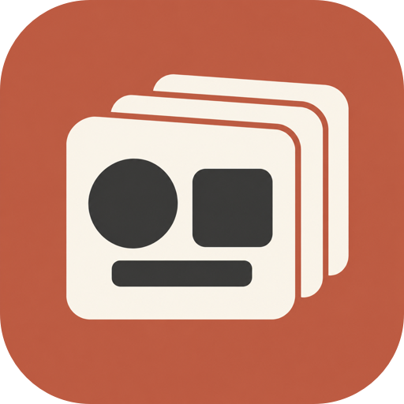

ものクログのグループに
招待されています
このリンクは、ものクログのアプリで開くと、グループへの参加を申請できます。
- ものクログをまだ入れていない場合は、App Store から入れてください。
- もう一度、届いた招待リンクを開いてください。アプリが開き、参加の画面が表示されます。
- 表示名を入れて申請すると、リーダーが承認したあとにグループの投稿が見えるようになります。
リンクを開いてもアプリに切り替わらないときは、届いたメッセージ（招待リンク）をコピーして、アプリの「タイムライン」→ 左上のグループのボタン →「招待リンクから参加する」に貼り付けてください。
招待リンクは発行から24時間有効です。期限が切れた場合は、リーダーに新しい招待リンクを送ってもらってください。